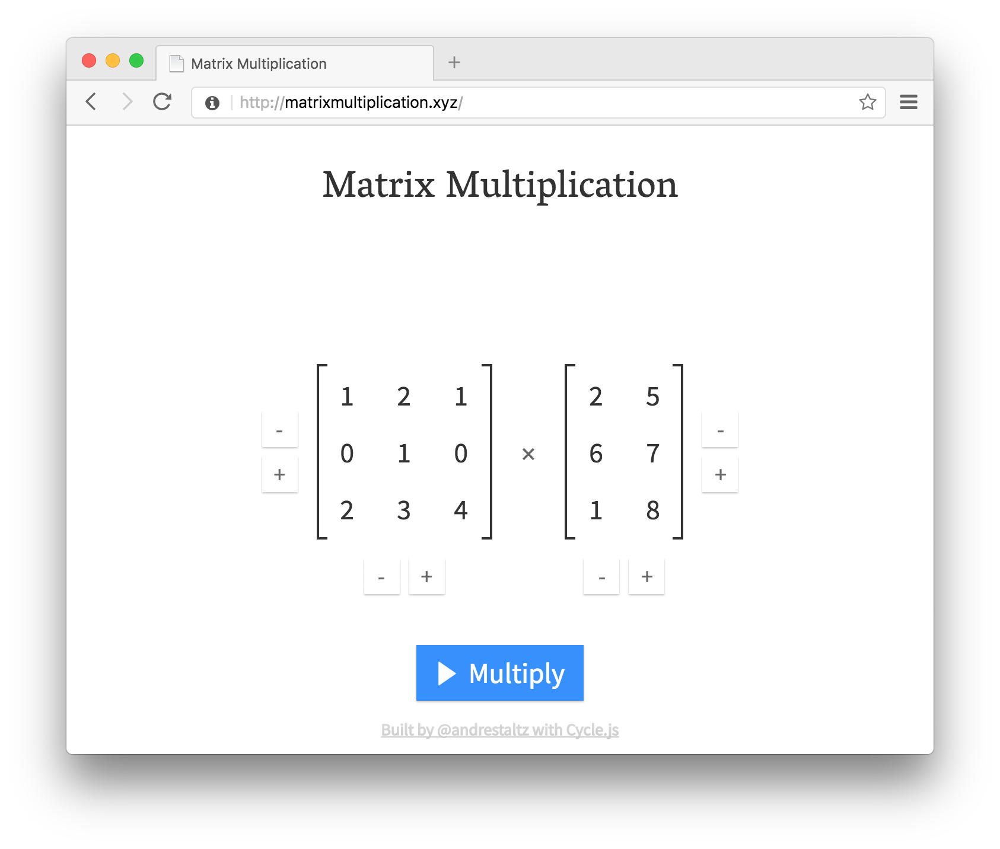
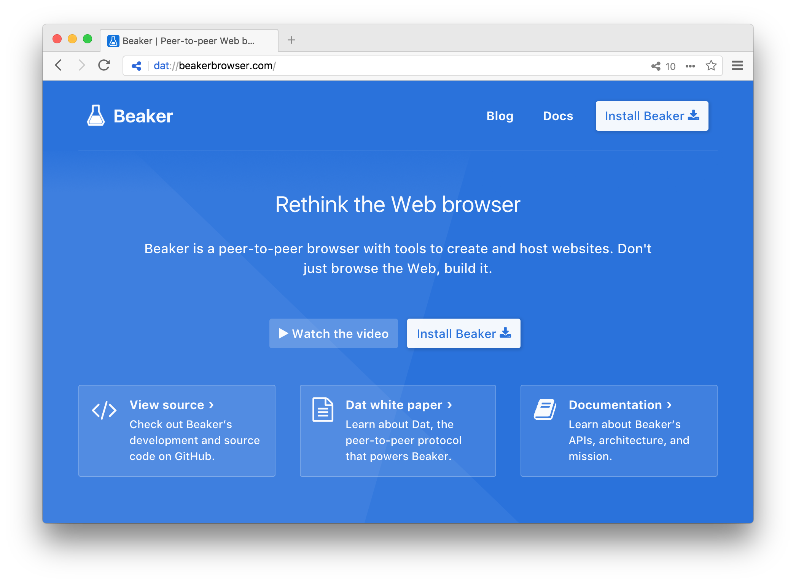
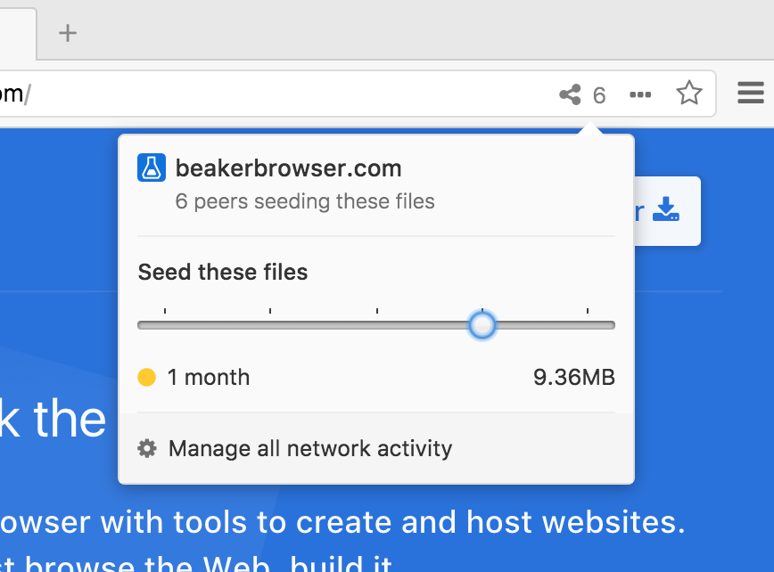
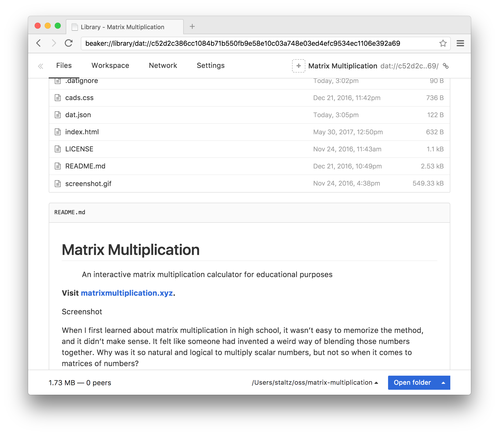
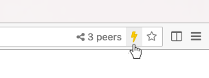
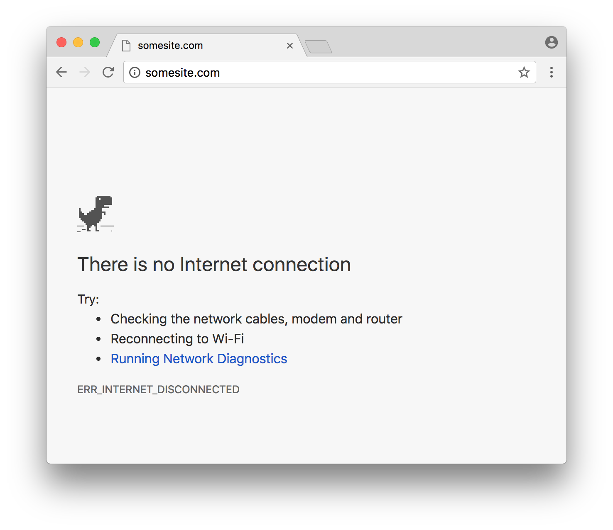

Beaker: the frontend developer's dream browser
so! let's suppose you just finished a new small webapp 👌
like, I made matrixmultiplication.xyz, a simple calculator

there are many other small sites like this out there
how do you
publish a new site?
first you gotta figure out where to host it 🤔
self-host?
or use something easier like github pages?
what about a domain?
and a certificate for HTTPS support?
might take a few hours to get it all set up 😔
here's what you can do
instead 💡
publish it from
Beaker Browser!

it supports a new protocol,
dat://
, besides
http:// and
https://
dat:// is kind of like
file://
your site doesn't get "uploaded"
it's just on your computer
with an address that looks like
dat://9900f9..9a/
but has a super interesting property... 🔮
Beaker browsers on
other computers can now access the site!
the browser is the server!
the browsers form a
peer-to-peer network
kind of like torrent
your browser is
seeding your site
when people visit the site, they will
leech it
but they can also choose to seed it 🌱

this is a win-win situation!
less traffic goes to your computer
and the person seeding it has your site offline!
they could use it in the airplane ✈️
or where there is no internet 🏞️
when they go back online, Beaker will fetch the latest version of the site
this peer-to-peer network works over the internet
but also in
local area networks, like your workplace!
LAN sharing works even if the router has no internet connection 😌
it's the best browser to
share simple sites with other developers 👩🏻💻
plus, you can also
create a site from Beaker
and your site's settings looks like a GitHub repo:

with built-in support for
live-reloading:

this
feels like the future of web development
and it can go beyond sharing simple sites
imagine an e-commerce site
by allowing visitors to seed the site, it means...
they will help reduce traffic to the statics server
and they can browse when offline
(like PWAs also allow)
but not everything needs to be offline
business-critical stuff can be served through a backend
it's just better if your customers *know* they can browse the site
instead of seeing this:

why
require internet connection?
and miss an opportunity to engage customers with your brand?
Service Workers were one step towards the future
Beaker goes even further
and makes us question:
how can we make the Web work
independently from the Internet? ☀️
:)
it's also available through Beaker:
dat://603a92700145dc4b01ae902a58747b7f676862059ce44dfb7c0e59779b5648f8